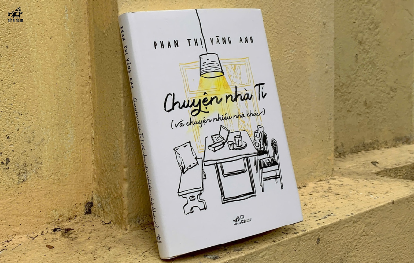
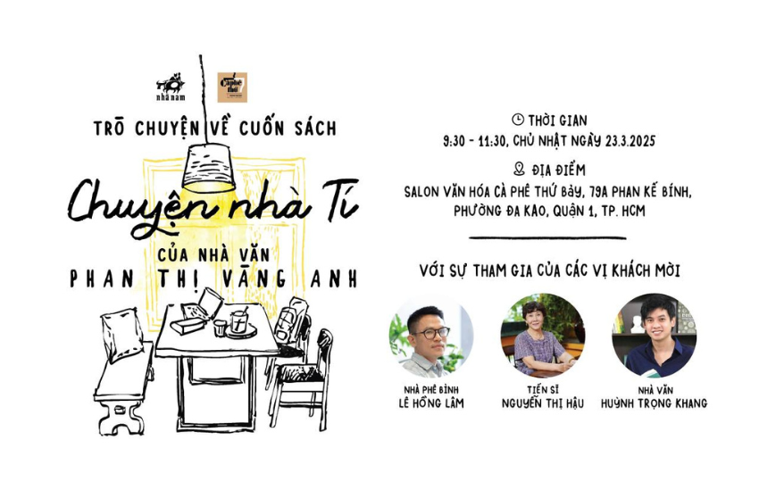

C[THÔNG BÁO SỰ KIỆN] Trò chuyện về cuốn sách "Chuyện nhà Tí" của nhà văn Phan Thị Vàng Anh
Nhà văn Phan Thị Vàng Anh là cái tên không còn xa lạ với độc giả Việt Nam. Dù không viết quá nhiều, mỗi sáng tác của Phan Thị Vàng Anh đều khẳng định dấu ấn riêng, không cầu kỳ nhưng thấm thía và gần gũi với người đọc.

Tập truyện ngắn – tản văn “Chuyện nhà Tí (và chuyện nhiều nhà khác)” vừa ra mắt, đánh dấu sự trở lại của một trong những cây bút được yêu thích nhất của văn chương đương đại. Đây là một tác phẩm nhẹ nhàng ghi lại những câu chuyện giản dị của đời sống thường nhật với một lối viết tinh tế và lạ hóa những điều quen thuộc.
